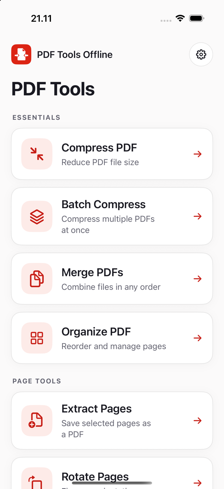
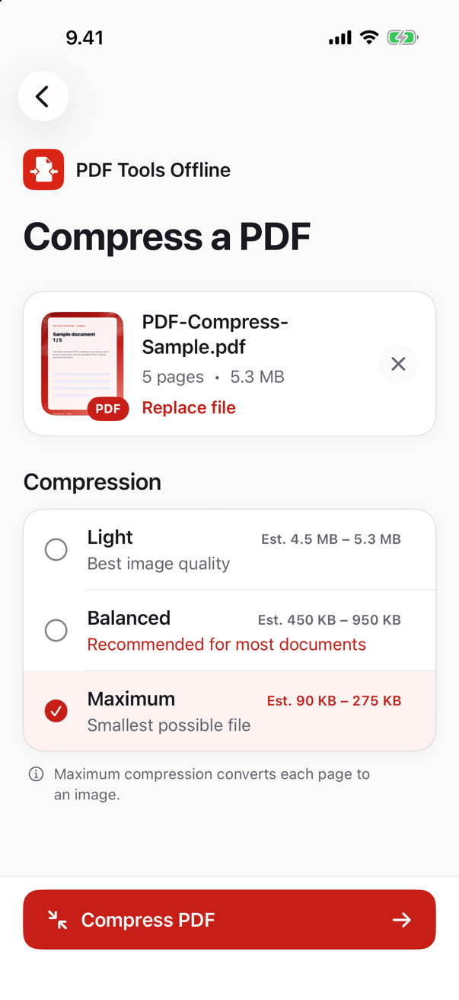
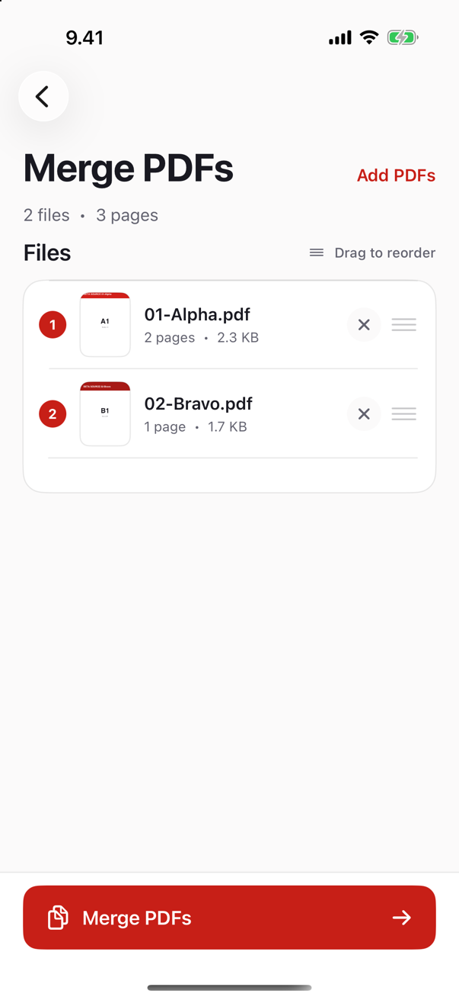
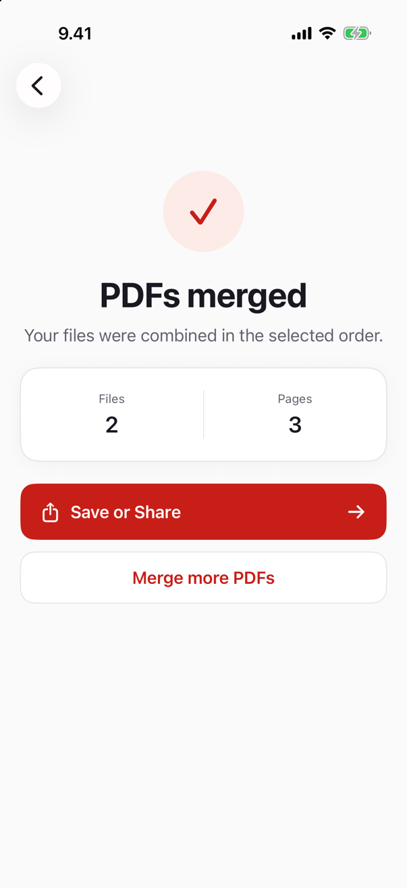
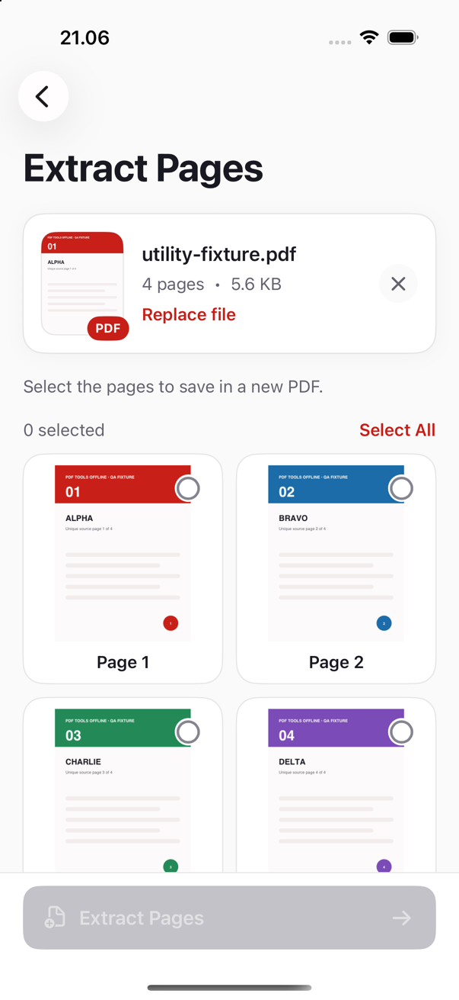
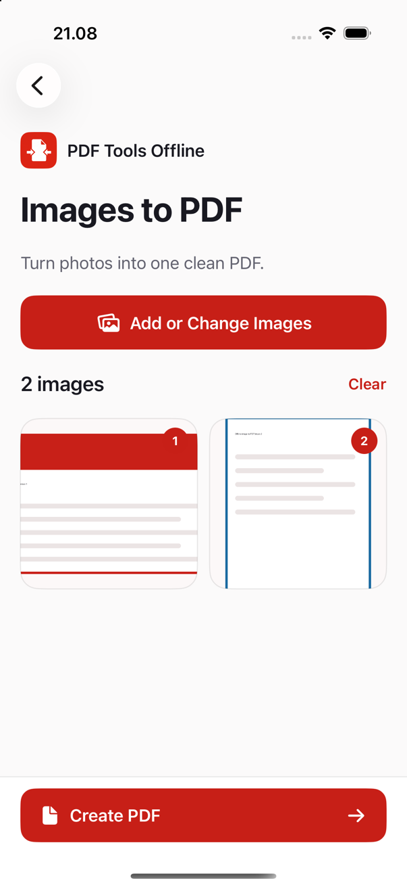

01
Compress PDF
Choose Light, Balanced, or Maximum compression and see an estimated output size before processing.
- Three clearly explained quality levels
- Adaptive maximum compression
- Original preserved if no smaller file is possible
Private by design · For iPhone and Mac
Compress, merge, organize, convert, and edit PDF pages without uploading a single file. Your documents stay on your device from start to finish.


Focused by design
Clear choices, immediate results, and no cloud workflow to manage.
01
Choose Light, Balanced, or Maximum compression and see an estimated output size before processing.
02
Choose several PDFs and apply one compression setting to the entire batch.
03
Select multiple PDFs in one step, drag them into the exact order you want, and create a single document.
04
Bring pages from one or more PDFs into one visual workspace. Reorder or remove pages before saving.
05
Select page thumbnails and save exactly those pages as a new PDF in their original order.
06
Rotate only the pages that need attention while preserving the rest of the document.
07
Remove unwanted pages confidently with a visual overview of the full PDF.
08
Number every page from your chosen starting value and footer position.
09
Turn selected photos into one PDF with page orientation matched to each image.
10
Export every PDF page as a crisp PNG or a compact JPEG image.
Real beta build
Every selected file is visible before merging. Drag files into place, review the page count, then export when the order is right.
Beta-tested on iPhone
Multi-select, add, remove, reorder, cancel, invalid-file handling, and final page order were verified.


Visual page tools
Page thumbnails make extraction, rotation, and deletion predictable. Image conversion keeps portrait and landscape content neatly framed.
Output-verified
Page count, order, rotation, numbering, image dimensions, and batch results are checked in automated offline beta tests.


Clear and accountable
The settings button is always visible on the home screen. From there, the About page shows the installed version, offline processing status, privacy policy, support, website, and official GitHub project page.
Privacy without settings
PDF Tools Offline does not upload your documents, create an account, or include an analytics or tracking SDK. Processing happens locally using capabilities already built into your iPhone or Mac.
See the full privacy policyStraight answers
No. Compression, merging, page editing, image conversion, and output validation run entirely on the device.
No. The app imports a working copy into its local sandbox and never uploads it. You decide where the finished PDF goes when you save or share it.
Some PDFs are already highly optimized. When a smaller valid result cannot be produced, the app preserves the original instead of creating a larger file.
Maximum compression renders each page as a smaller image. This can greatly reduce size, but selectable text and vector detail may be lost.
Coming to the App Store
The release is being prepared now. Follow the official project page for launch updates.